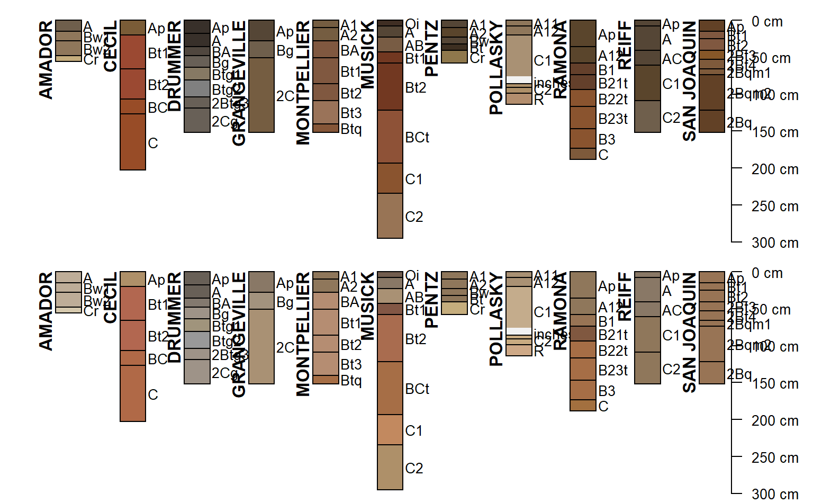
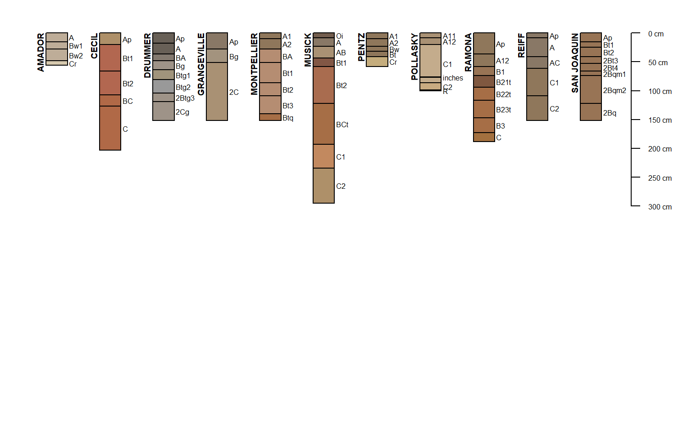

This function fetches a variety of data associated with named soil series, extracted from the USDA-NRCS Official Series Description text files and detailed soil survey (SSURGO). These data are periodically updated and made available via SoilWeb.
fetchOSD(soils, colorState = "moist", extended = FALSE)
| soils | a character vector of named soil series; case-insensitive |
|---|---|
| colorState | color state for horizon soil color visualization: "moist" or "dry" |
| extended | if |
a SoilProfileCollection object containing basic soil morphology and taxonomic information.
SoilProfileCollection object (extended=FALSE. The "extended" suite of summary data can be requested by setting extended=TRUE. The resulting object will be a list with the following elements:)SoilProfileCollection containing standards "site" and "horizon" data
competing soil series from the SC database snapshot
geographically associated soils, extracted from named section in the OSD
empirical probabilities for geomorphic component, derived from the current SSURGO snapshot
empirical probabilities for hillslope position, derived from the current SSURGO snapshot
empirical probabilities for mountain slope position, derived from the current SSURGO snapshot
empirical probabilities for river terrace position, derived from the current SSURGO snapshot
empirical probabilities for flat landscapes, derived from the current SSURGO snapshot
empirical probabilities for parent material kind, derived from the current SSURGO snapshot
empirical probabilities for parent material origin, derived from the current SSURGO snapshot
empirical MLRA membership values, derived from the current SSURGO snapshot
experimental climate summaries from PRISM stack (CONUS only)
metadata associated with SoilWeb cached summaries
extended=TRUE, there are a couple of scenarios in which series morphology contained in SPC do not fully match records in the associated series summaries (e.g. competing).- Climate summaries are empty data.frames because these summaries are currently generated from PRISM. We are working on a solution.
- Extended summaries are present but morphology missing from SPC. A warning is issued.
- Extended summaries are present but morphology missing from SPC. A warning is issued.
USDA-NRCS OSD search tools: https://www.nrcs.usda.gov/wps/portal/nrcs/detailfull/soils/home/?cid=nrcs142p2_053587
D.E. Beaudette
# \donttest{ if(requireNamespace("curl") & curl::has_internet()) { # soils of interest s.list <- c('musick', 'cecil', 'drummer', 'amador', 'pentz', 'reiff', 'san joaquin', 'montpellier', 'grangeville', 'pollasky', 'ramona') # fetch and convert data into an SPC s.moist <- fetchOSD(s.list, colorState='moist') s.dry <- fetchOSD(s.list, colorState='dry') # plot profiles # moist soil colors if(require("aqp")) { par(mar=c(0,0,0,0), mfrow=c(2,1)) plot(s.moist, name='hzname', cex.names=0.85, axis.line.offset=-4) plot(s.dry, name='hzname', cex.names=0.85, axis.line.offset=-4) # extended mode: return a list with SPC + summary tables x <- fetchOSD(s.list, extended = TRUE, colorState = 'dry') par(mar=c(0,0,1,1)) plot(x$SPC) str(x, 1) } }#> List of 14 #> $ SPC :Formal class 'SoilProfileCollection' [package "aqp"] with 9 slots #> $ competing :'data.frame': 84 obs. of 3 variables: #> $ geog_assoc_soils:'data.frame': 77 obs. of 2 variables: #> $ geomcomp :'data.frame': 11 obs. of 9 variables: #> $ hillpos :'data.frame': 11 obs. of 8 variables: #> $ mtnpos :'data.frame': 1 obs. of 9 variables: #> $ terrace :'data.frame': 7 obs. of 5 variables: #> $ flats :'data.frame': 5 obs. of 7 variables: #> $ pmkind :'data.frame': 18 obs. of 5 variables: #> $ pmorigin :'data.frame': 33 obs. of 5 variables: #> $ mlra :'data.frame': 52 obs. of 4 variables: #> $ climate.annual :'data.frame': 88 obs. of 12 variables: #> $ climate.monthly :'data.frame': 264 obs. of 14 variables: #> $ soilweb.metadata:'data.frame': 19 obs. of 2 variables:# }